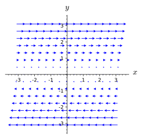

Section12.5Path-Independent Vector Fields and the Fundamental Theorem of Calculus for Line Integrals
Motivating Questions
What characteristic of a vector field \(\vF\) will make \(\int_C\vF\cdot d\vr\) have the same value for every oriented curve from a point \(P\) to a point \(Q\text{?}\)
What special properties do gradient vector fields have?
Given a gradient vector field \(\vF\text{,}\) how can we efficiently find a potential function \(f\) so that \(\vF
= \grad f\text{?}\)
In Activity 12.3.3, Example 12.3.5, and Activity 12.3.4, we have encountered situations where \(C_1\) and \(C_2\) are different oriented curves from a point \(P\) to a point \(Q\) and \(\int_{C_1}\vF\cdot d\vr = \int_{C_2}\vF\cdot
d\vr\text{.}\) In this section, we explore vector fields which have the property that for all points \(P\) and \(Q\text{,}\) if \(C_1\) and \(C_2\) are oriented paths from \(P\) to \(Q\text{,}\) then \(\int_{C_1}\vF\cdot d\vr = \int_{C_2}\vF\cdot
d\vr\text{.}\)
Preview Activity12.5.1.
In Activity 12.3.3, we considered the vector field \(\vF(x,y) = \langle
y^2,2xy+3\rangle\) and two different oriented curves from \((1,0)\) to \((-1,0)\text{.}\) We found that the value of the line integral of \(\vF\) was the same along those two oriented curves.
(a)
Verify that \(\vF(x,y) = \langle y^2,2xy+3\rangle\) is a gradient vector field by showing that \(\vF = \nabla f\) for the function \(f(x,y) = xy^2 + 3y\text{.}\)
(b)
Calculate the change in the output of the scalar function \(f\) over the curves \(C_1\) and \(C_2\text{.}\) In other words, what is the difference in the output of \(f\) at the start of the curve and the end of the curve. How does this value compare to the value of the line integral \(\int_{C_1}\vF\cdot d\vr\) you found in Activity 12.3.3?
(c)
Let \(C_3\) be the line segment from \((1,1)\) to \((3,4)\text{.}\) Calculate \(\int_{C_3}\vF\cdot d\vr\) as well as \(f(3,4)-f(1,1)\text{.}\) What do you notice?
(d)
Earlier in the chapter, we've used Clairaut's Theorem to argue that a vector field in \(\R^2\) is not a gradient vector field when \(\partial F_1/\partial y\neq \partial F_2/\partial
x\text{.}\) Earlier in this preview activity, you verified that a given vector field was the gradient of a particular function of two variables. Clairaut's Theorem holds for functions of three variables. However, in that case there are six mixed partials to calculate, and thus it can be rather tedious.The remaining parts of this preview activity suggest a process for determining if a vector field in \(\R^3\) is a gradient vector field as well as finding a potential function for the vector field.
Let \(\vG(x,y,z) = \langle 3e^{y^2}+z\sin(x),6xy e^{y^2} -
z,3z^2-y-\cos(x)\rangle\) and \(\vH(x,y,z) = \langle 3x^2
y,x^3+2yz^3,xz+3y^2z^2\rangle\text{.}\)
If \(\vG\) and \(\vH\) are to be gradient vector fields, then there are functions \(g\) and \(h\) for which \(\vG = \nabla g\) and \(\vH=\nabla h\text{.}\) What would this tell us about the partial derivatives \(g_x\text{,}\)\(g_y\text{,}\)\(g_z\text{,}\)\(h_x\text{,}\)\(h_y\text{,}\) and \(h_z\text{?}\)
(e)
Let \(g_1(x,y,z)=3e^{y^2}+xyz-z\sin(x)\text{.}\) Calculate \(\partial g_1/\partial x\text{.}\) Could \(g_1\) be a potential function for the vector field \(\vG\text{?}\)
(f)
Find a function \(g\) so that \(\partial g/\partial x =
3e^{y^2}+z\sin(x)\text{.}\) Find a function \(h\) so that \(\partial h/\partial x = 3x^2y\text{.}\)
(g)
When finding the most general anti-derivative for a function of one variable, we add a constant of integration (usually denoted by \(C\)) to capture the fact that any constant will become \(0\) through differentiation.
(i)
When taking the partial derivative with respect to \(x\) of a function of \(x\text{,}\)\(y\text{,}\) and \(z\text{,}\) what variables can appear in terms that become \(0\) in the partial derivative because they are treated as constants?
(ii)
What does this tell you should be added to \(g\) and \(h\) in the previous part to make them the most general possible functions with the desired partial derivatives with respect to \(x\text{?}\)
(h)
Now calculate \(\partial g/\partial y\) and \(\partial
h/\partial y\text{.}\) Explain why this tells you that we must have
for some functions \(m_1\) and \(m_2\) depending only on \(z\text{.}\)
(i)
Calculate \(\partial g/\partial z\) and \(\partial
h/\partial z\) for the functions in the part above. Notice that \(m_1\) and \(m_2\) are functions of \(z\) alone, so taking a partial derivative with respect to \(z\) is the same as taking an ordinary derivative, and thus you may use the notation \(m'_1(z)\) and \(m'_2(z)\text{.}\)
(j)
Explain why \(\vG\) is a gradient vector field but \(\vH\) is not a gradient vector field. Find a potential function for \(\vG\text{.}\)
Subsection12.5.1Path-Independent Vector Fields
We say that a vector field \(\vF\) defined on a domain \(D\) is path-independent if \(\int_{C_1}\vF\cdot d\vr = \int_{C_2}\vF\cdot d\vr\) whenever \(C_1\) and \(C_2\) are oriented paths in \(D\) such that both curves start at the same point \(P\) and end at point \(Q\text{.}\)
In Activity 12.3.3 and Example 12.3.5, we encountered situations where we had evidence that a vector field was path-independent. However, since the definition of path-independence requires that the value of the line integral be the same for every pair of points in the domain and every possible path from one point to the other, it doesn't appear that verifying a vector field is path-independent is an easy task.
Fortunately, one familiar class of vector fields can be shown to be path-independent. Let \(f\colon \R^3\to \R\) be a function for which \(\nabla f\) is continuous on a domain \(D\text{.}\) Suppose that \(P\) and \(Q\) are points in \(D\) and let \(C\) be a smooth oriented path from \(P\) to \(Q\text{.}\) Let's take a look at \(\int_C\nabla f \cdot d\vr\) by fixing an arbitrary parametrization \(\vr(t)\) of \(C\text{,}\)\(a\leq t \leq b\text{.}\) Since \(\nabla f(\vr(t)) = \langle f_x(\vr(t)),f_y(\vr(t)),f_z(\vr(t))\rangle\text{,}\) we know that
In other words, gradient vector fields are path-independent vector fields, and we can evaluate line integrals of gradient vector fields by using a potential function. (Technically the argument above assumed that \(C\) was smooth, but we can replace \(C\) by a piecewise smooth curve by splitting the line integral up into the sum of finitely many line integrals along smooth curves.)
This result is so important that it is frequently called the Fundamental Theorem of Calculus for Line Integrals, because of its similarity to the Fundamental Theorem of Calculus, which can be written as
Theorem12.5.1.Fundamental Theorem of Calculus for Line Integrals.
Let \(f\) be a function for which \(\nabla f\) is continuous on a domain \(D\text{.}\) If \(P\) and \(Q\) are points in \(D\) and \(C\) is a piece-wise smooth oriented path from \(P\) to \(Q\) in \(D\text{,}\) then
\(\int_C \nabla f\cdot d\vr\) if \(f(x,y) = 3xy^2 - \sin(x) + e^y\) and \(C\) is the top half of the unit circle oriented from \((-1,0)\) to \((1,0)\text{.}\)
(b)
\(\int_C \nabla g\cdot d\vr\) if \(g(x,y,z) = xz^2 - 5y^3\cos(z) + 6\) and \(C\) is the portion of the helix \(\vr(t) = \langle 5\cos(t),5\sin(t),3t\rangle\) from \((5,0,0)\) to \((0,5,9\pi/2)\text{.}\)
(c)
\(\int_C \nabla h\cdot d\vr\) if \(h(x,y,z) = 3y^2e^{y^3} - 5x\sin(x^3z) + z^2\) and \(C\) is the curve consisting of the line segment from \((0,0,0)\) to \((1,1,1)\text{,}\) followed by the line segment from \((1,1,1)\) to \((-1,3,-2)\text{,}\) followed by the line segment from \((-1,3,-2)\) to \((0,0,10)\text{.}\)
Find \(f(x,y)\) such that \(\nabla f = \vF\text{.}\)
(b)
\(\int_C \vG\cdot d\vr\) if \(\vG(x,y) = \langle 4x^3-12y\cos(xy),9y^2-12x\cos(xy)\rangle\) and \(C\) is the portion of the unit circle from \((0,-1)\) to \((0,1)\text{.}\)
(c)
\(\int_C \vH\cdot d\vr\) if \(\vH(x,y,z) = \langle H_1,H_2,H_3\rangle\) with
and \(C\) is the curve consisting of the line segment from \((1,1,1)\) to \((3,0,3)\text{,}\) followed by the line segment from \((3,0,3)\) to \((1,5,-1)\text{,}\) followed by the line segment from \((1,5,-1)\) to \((0,0,0)\text{.}\)
Subsection12.5.2Line Integrals Along Closed Curves
Recall that we call an oriented curve \(C\)closed if it has the same initial and terminal point. A typical example of a closed curve would be a circle (with an orientation of which way to go around), but we could also consider something like the square with vertices \((1,1)\text{,}\)\((-1,1)\text{,}\)\((-1,-1)\text{,}\) and \((1,-1)\text{,}\) oriented clockwise (or counterclockwise). Recall that we sometimes use the symbol \(\oint\) for a line integral when the curve is closed and that if \(C=C_1+C_2\text{,}\) then \(\int_C\vF\cdot d\vr=\int_{C_1}\vF\cdot d\vr+ \int_{C_2}\vF\cdot d\vr\text{.}\)
Activity12.5.4.
Suppose that \(\vF\) is a continuous path-independent vector field (in \(\R^2\) or \(\R^3\)) on some domain \(D\text{.}\)
(a)
Let \(P\) and \(Q\) be points in \(D\) and let \(C_1\) and \(C_2\) be oriented curves from \(P\) to \(Q\text{.}\) What can you say about \(\int_{C_1}\vF\cdot d\vr\) and \(\int_{C_2}\vF\cdot d\vr\text{?}\)
(b)
Let \(C = C_1 - C_2\text{.}\) Explain why \(C\) is a closed curve.
(c)
Calculate \(\oint_C\vF\cdot d\vr\text{.}\)
(d)
Write a sentence that summarizes what we can conclude at this point in the activity.
(e)
Now let us suppose that \(\vG\) is a continuous vector field on a domain \(D\) for which \(\oint_C\vG\cdot d\vr =
0\) for all closed curves \(C\text{.}\) Pick two points \(P\) and \(Q\) in \(D\text{.}\) Let \(C_1\) and \(C_2\) be oriented curves from \(P\) to \(Q\text{.}\) What type of curve is \(C = C_1 - C_2\text{?}\)
(f)
What is \(\oint_C\vG\cdot d\vr\text{?}\) Why?
(g)
What does that tell you about the relationship between \(\int_{C_1}\vG\cdot d\vr\) and \(\int_{C_2}\vG\cdot d\vr\text{?}\)
(h)
Explain why this shows that \(\vG\) is path-independent.
We summarize the result of Activity 12.5.4 with the theorem below. Although this theorem is not a terribly useful way to show that a vector field is path-independent, it can be a useful way to show that a vector field is not path-independent: find a closed curve around which the circulation is not zero.
Theorem12.5.2.
Let \(\vF\) be a continuous vector field on a domain \(D\text{.}\) Suppose that \(C\) is a closed curve in \(D\text{.}\) The circulation of \(\vF\) along \(C\text{,}\) given by \(\oint_C\vF\cdot d\vr\text{,}\) is zero if and only if \(\vF\) is path-independent.
The following activity gives you a chance to reason about path-independence based purely on a graphical representation of a vector field.
Activity12.5.5.
Explain why neither of the vector fields in Figure 12.5.3 is path-independent.
(a)\(\vF\)
(b)\(\vG\)
Figure12.5.3.Two vector fields that are not path-independent.
Subsection12.5.3What other vector fields are path-independent?
Recall that in single variable calculus, the Second Fundamental Theorem of Calculus tells us that given a constant \(c\) and a continuous function \(f\text{,}\) there is a unique function \(A(x)\) for which \(A(c) = 0\) and \(A'(x) = f(x)\text{.}\) In particular, \(A(x) = \int_c^x f(t)\, dt\) is this function. We are about to investigate an analog of this result for path-independent vector fields, but first we require two additional definitions.
If \(D\) is a subset of \(\R^2\) or \(\R^3\text{,}\) we say that \(D\) is open provided that for every point in \(D\text{,}\) there is a disc (in \(\R^2\)) or ball (in \(\R^3\)) centered at that point such that every point of the disc/ball is contained in \(D\text{.}\) For example, the set of points \((x,y)\) in \(\R^2\) for which \(x^2+y^2 \lt 1\) is open, since we can always surround any point in this set by a tiny disc contained in the set. However, if we change the inequality to \(x^2+y^2\leq 1\text{,}\) then the set is not open, as any point on the circle \(x^2+y^2=1\) cannot be surrounded by a disc contained in the set; any disc surrounding a point on that circle will contain points outside the set, that is with \(x^2+y^2>1\text{.}\) We will also say that a region \(D\) is path-connected provided that for every pair of points in \(D\text{,}\) there is a path from one to the other contained in \(D\text{.}\)
Activity12.5.6.
Let \(\vF=\langle F_1,F_2\rangle\) be a continuous, path-independent vector field on an open, connected region \(D\text{.}\) We will assume that \(D\) is in \(\R^2\) and \(\vF\) is a two-dimensional vector field, but the ideas below generalize completely to \(\R^3\text{.}\) We want to define a function \(f\) on \(D\) by using the vector field \(\vF\) and line integrals, much like the Second Fundamental Theorem of Calculus allows us to define an antiderivative of a continuous function using a definite integral. To that end, we assign \(f(x_0,y_0)\) an arbitrary value. (Setting \(f(x_0,y_0)=0\) is probably convenient, but we won't explicitly tie our hands. Just assume that \(f(x_0,y_0)\) is defined to be some number.) Now for any other point \((x,y)\) in \(D\text{,}\) define
where \(C\) is any oriented path from \((x_0,y_0)\) to \((x,y)\text{.}\) Since \(D\) is connected, such an oriented path must exist. Since \(\vF\) is path-independent, \(f\) is well-defined. If different paths from \((x_0,y_0)\) to \((x,y)\) gave different values for the line integral, then we'd not be sure what \(f(x,y)\) really is.
To better understand this mysterious function \(f\) we've now defined, let's start looking at its partial derivatives.
(a)
Since \(D\) is open, there is a disc (perhaps very small) surrounding \((x,y)\) that is contained in \(D\text{,}\) so fix a point \((a,b)\)in that disc. Since \(D\) is path-connected, there is a path \(C_1\) from \((x_0,y_0)\) to \((a,b)\text{.}\) Let \(C_y\) be the line segment from \((a,b)\) to \((a,y)\) and let \(C_x\) be the line segment from \((a,y)\) to \((x,y)\text{.}\) (See Figure 12.5.4.) Rewrite \(f(x,y)\) as a sum of \(f(x_0,y_0)\) and line integrals along \(C_1\text{,}\)\(C_y\text{,}\) and \(C_x\text{.}\)
Figure12.5.4.Two piecewise smooth oriented curves from \((x_0,y_0)\) to \((x,y)\text{.}\)
(b)
Notice that we can parametrize \(C_y\) by \(\langle
a,t\rangle\) for \(b\leq t\leq y\text{.}\) Find a similar parametrization for \(C_x\text{.}\)
(c)
Use the parametrization from above to write \(\int_{C_y}\vF\cdot d\vr\) and \(\int_{C_x}\vF\cdot
d\vr\) as single variable integrals in the manner of Section 12.3. Use the fact that \(\vF(x,y) = \langle F_1(x,y),F_2(x,y)\rangle\) to express your integrals in terms of \(F_1\) and \(F_2\) without any dot products.
(d)
Rewrite your expression for \(f(x,y)\) using the single variable integrals above (and a line integral along \(C_1\)).
(e)
Notice that your expression for \(f(x,y)\) from the previous part only depends on \(x\) as the upper limit of an single variable integral. Use the Second Fundamental Theorem of Calculus to calculate \(f_x(x,y)\text{.}\)
(f)
To calculate \(f_y(x,y)\text{,}\) we continue to consider a path \(C_1\) from \((x_0,y_0)\) to \((a,b)\text{,}\) but now let \(L_x\) be the line segment from \((a,b)\) to \((x,b)\) and let \(L_y\) be the line segment from \((x,b)\) to \((y,b)\text{.}\) Modify the process you used to find \(f_x(x,y)\) to find \(f_y(x,y)\text{.}\)
(g)
What can you conclude about the relationship between \(\grad f\) and \(\vF\text{?}\) What does this tell you about \(\vF\) beyond that it is path-independent and continuous?
If \(\vF\) is a path-independent vector field on an open, path-connected domain \(D\text{,}\) then \(\vF\) is a gradient vector field on \(D\text{.}\) Furthermore, if \(P\) is a point in \(D\) and \(f(P)\) is fixed, then for a point \(Q\) in \(D\) and an oriented curve \(C\) from \(P\) to \(Q\) in \(D\text{,}\) the function
with the analogous result holding if \(f\) is a function of three variables.
A vector field is path-independent if and only if the circulation around every closed curve in its domain is \(0\text{.}\)
If a vector field \(\vF\) is path-independent, then there exists a function \(f\) such that \(\nabla f =
\vF\text{.}\) That is, \(\vF\) is a conservative or gradient vector field.
The line integral of \(\vF=\langle yz,xz,y\rangle\) along the helix of radius of 3 given by \(\vr(t) \langle
3\sin(t), 3\cos(t), \frac{4}{\pi} t\rangle \) as \(-\pi\leq
t\leq \pi\text{.}\)
(b)
The line integral of \(\vF=\langle \sin(yz),
xz\cos(yz)-z\sin(y),xy\cos(yz)+\cos(y)\rangle\) along the line segment from \((0,\pi,3)\) to \((2,-1,2\pi)\text{.}\)
(c)
The integral\(\int_C y^2\, dx +2xy\, dy\) where \(C\) is the parabolic path along \(y=x^2\) from \((-1,1)\) to \((4,16)\text{.}\)
5.
Let \(\vF=\langle F_1,F_2,F_3\rangle\text{,}\) where \(F_1=
3xy^2+z\) and \(F_3 = yz^2+\cos(z)\text{.}\)
(a)
Give a component function \(F_2\) such that \(\vF\) is a gradient vector field.
(b)
Give a component function \(F_2\) such that \(\vF\) is not a gradient vector field.
6.
This exercise focuses on reasoning graphically about line integrals and vector fields.
(a)
Find a closed curve on which the line integral of the vector field pictured below will not be zero. Be sure to clearly define your curve and explain why the line integral over your curve is non-zero.
Figure12.5.6.A vector field
(b)
Explain why you think the following vector field is path independent or not.
Figure12.5.7.Another vector field
7.
Compute \(\int_C ye^z\, dx +xe^z\, dy+xye^z\, dz\) where \(C\) is given by \(\langle t^2,t^3,t-1\rangle\) for \(1\leq t\leq 2\text{.}\)